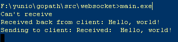

8.2 WebSocket
WebSocket是HTML5的重要特性，它实现了基于浏览器的远程socket，它使浏览器和服务器可以进行全双工通信，许多浏览器（Firefox、Google Chrome和Safari）都已对此做了支持。
在WebSocket出现之前，为了实现即时通信，采用的技术都是“轮询”，即在特定的时间间隔内，由浏览器对服务器发出HTTP Request，服务器在收到请求后，返回最新的数据给浏览器刷新，“轮询”使得浏览器需要对服务器不断发出请求，这样会占用大量带宽。
WebSocket采用了一些特殊的报头，使得浏览器和服务器只需要做一个握手的动作，就可以在浏览器和服务器之间建立一条连接通道。且此连接会保持在活动状态，你可以使用JavaScript来向连接写入或从中接收数据，就像在使用一个常规的TCP Socket一样。它解决了Web实时化的问题，相比传统HTTP有如下好处：
- 一个Web客户端只建立一个TCP连接
- Websocket服务端可以推送(push)数据到web客户端.
- 有更加轻量级的头，减少数据传送量
WebSocket URL的起始输入是ws://或是wss://（在SSL上）。下图展示了WebSocket的通信过程，一个带有特定报头的HTTP握手被发送到了服务器端，接着在服务器端或是客户端就可以通过JavaScript来使用某种套接口（socket），这一套接口可被用来通过事件句柄异步地接收数据。

图8.2 WebSocket原理图
WebSocket原理
WebSocket的协议颇为简单，在第一次handshake通过以后，连接便建立成功，其后的通讯数据都是以”\x00″开头，以”\xFF”结尾。在客户端，这个是透明的，WebSocket组件会自动将原始数据“掐头去尾”。
浏览器发出WebSocket连接请求，然后服务器发出回应，然后连接建立成功，这个过程通常称为“握手” (handshaking)。请看下面的请求和反馈信息：

图8.3 WebSocket的request和response信息
在请求中的"Sec-WebSocket-Key"是随机的，对于整天跟编码打交到的程序员，一眼就可以看出来：这个是一个经过base64编码后的数据。服务器端接收到这个请求之后需要把这个字符串连接上一个固定的字符串：
258EAFA5-E914-47DA-95CA-C5AB0DC85B11
即：f7cb4ezEAl6C3wRaU6JORA==连接上那一串固定字符串，生成一个这样的字符串：
f7cb4ezEAl6C3wRaU6JORA==258EAFA5-E914-47DA-95CA-C5AB0DC85B11
对该字符串先用 sha1安全散列算法计算出二进制的值，然后用base64对其进行编码，即可以得到握手后的字符串：
rE91AJhfC+6JdVcVXOGJEADEJdQ=
将之作为响应头Sec-WebSocket-Accept的值反馈给客户端。
Go实现WebSocket
Go语言标准包里面没有提供对WebSocket的支持，但是在由官方维护的go.net子包中有对这个的支持，你可以通过如下的命令获取该包：
go get code.google.com/p/go.net/websocket
WebSocket分为客户端和服务端，接下来我们将实现一个简单的例子:用户输入信息，客户端通过WebSocket将信息发送给服务器端，服务器端收到信息之后主动Push信息到客户端，然后客户端将输出其收到的信息，客户端的代码如下：
<html>
<head></head>
<body>
<script type="text/javascript">
var sock = null;
var wsuri = "ws://127.0.0.1:1234";
window.onload = function() {
console.log("onload");
sock = new WebSocket(wsuri);
sock.onopen = function() {
console.log("connected to " + wsuri);
}
sock.onclose = function(e) {
console.log("connection closed (" + e.code + ")");
}
sock.onmessage = function(e) {
console.log("message received: " + e.data);
}
};
function send() {
var msg = document.getElementById('message').value;
sock.send(msg);
};
</script>
<h1>WebSocket Echo Test</h1>
<form>
<p>
Message: <input id="message" type="text" value="Hello, world!">
</p>
</form>
<button onclick="send();">Send Message</button>
</body>
</html>
可以看到客户端JS，很容易的就通过WebSocket函数建立了一个与服务器的连接sock，当握手成功后，会触发WebScoket对象的onopen事件，告诉客户端连接已经成功建立。客户端一共绑定了四个事件。
- 1）onopen 建立连接后触发
- 2）onmessage 收到消息后触发
- 3）onerror 发生错误时触发
- 4）onclose 关闭连接时触发
我们服务器端的实现如下：
package main
import (
"code.google.com/p/go.net/websocket"
"fmt"
"log"
"net/http"
)
func Echo(ws *websocket.Conn) {
var err error
for {
var reply string
if err = websocket.Message.Receive(ws, &reply); err != nil {
fmt.Println("Can't receive")
break
}
fmt.Println("Received back from client: " + reply)
msg := "Received: " + reply
fmt.Println("Sending to client: " + msg)
if err = websocket.Message.Send(ws, msg); err != nil {
fmt.Println("Can't send")
break
}
}
}
func main() {
http.Handle("/", websocket.Handler(Echo))
if err := http.ListenAndServe(":1234", nil); err != nil {
log.Fatal("ListenAndServe:", err)
}
}
当客户端将用户输入的信息Send之后，服务器端通过Receive接收到了相应信息，然后通过Send发送了应答信息。

图8.4 WebSocket服务器端接收到的信息
通过上面的例子我们看到客户端和服务器端实现WebSocket非常的方便，Go的源码net分支中已经实现了这个的协议，我们可以直接拿来用，目前随着HTML5的发展，我想未来WebSocket会是Web开发的一个重点，我们需要储备这方面的知识。